<!DOCTYPE html>
<html lang="en">

<title> Tiger Strake Digital Fabrication</title>
<link href="https://cdn.jsdelivr.net/npm/bootstrap@5.1.1/dist/css/bootstrap.min.css" rel="stylesheet">
<link href="../style.css" rel="stylesheet">


<nav class="navbar navbar-expand-sm navbar-light background-image">
  <div
    style="align-items: center; justify-content: center"
    class="container-fluid"
  >
    <h3 class="nav-title"> PHYS-S-12: Intro to Digital Fabrication</h3>
    <div class="navbar-nav">
      <h4></h4>
    </div>
  </div>
</nav>
<nav class="navbar navbar-expand-sm navbar-light background-image">
  <div class="container-fluid d-flex justify-content-between">
      <h4><a class="nav-link" href="../index.html" style="color:#EBF2FA;">Home</a></h4>
      <h4><a class="nav-link" href="Final_Project/index.html" style="color:#EBF2FA;">Final Project</a></h4>
      <h4><a class="nav-link" href="https://nathanmelenbrink.github.io/intro-dig-fab/index.html" style="color:#EBF2FA;">My class</a></h4>
      <h4><a class="nav-link" href="../about.html" style="color:#EBF2FA;">About</a></h4>
  </div>
</nav>
</html>

<body>
  <style>
    body {
      background-color: #486484;
    }
  </style>

<xmp style="display:none;">
<br> 

#### Week 2: Laser cutting and 3D modelling 
<font size="4">
Today we learned how to use a laser cutter and a vinyl plotter. We also made a quick workshop on how to use 3d modelling software, in this case Blender and Fusion 360. 
Our task during classes was to design and laser cut a press-fit structure, that uses multiple cardboard pieces and can be assembled in multiple different ways. We had to 
take into consideration, that the so-called kerf of the laser takes away a bit more material than specified in the design. With all that in mind I designed my structure. 
It is composed of triangles with small notches at all three end which interlock with each other. Here is a picture of the CAD drawing of the triangles. 


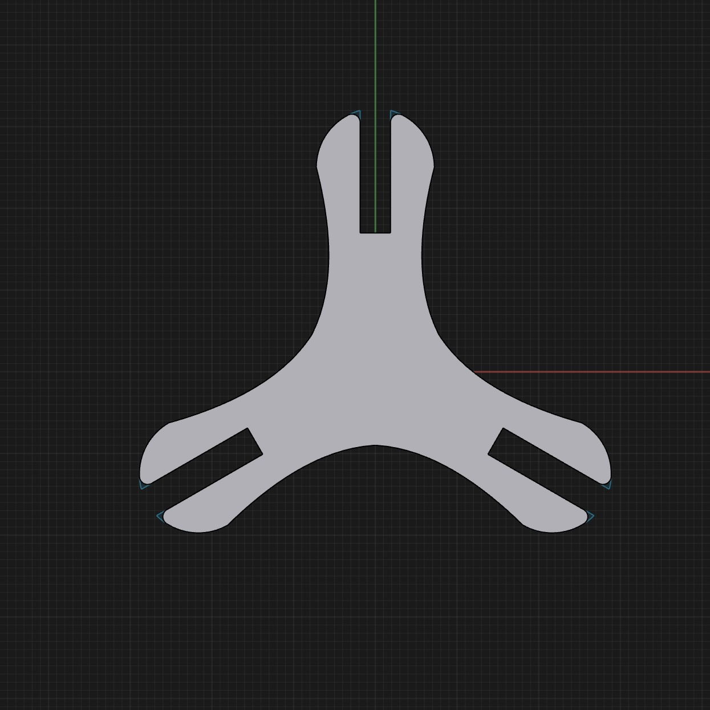

I assembled a small sphere with them which you can see here:

 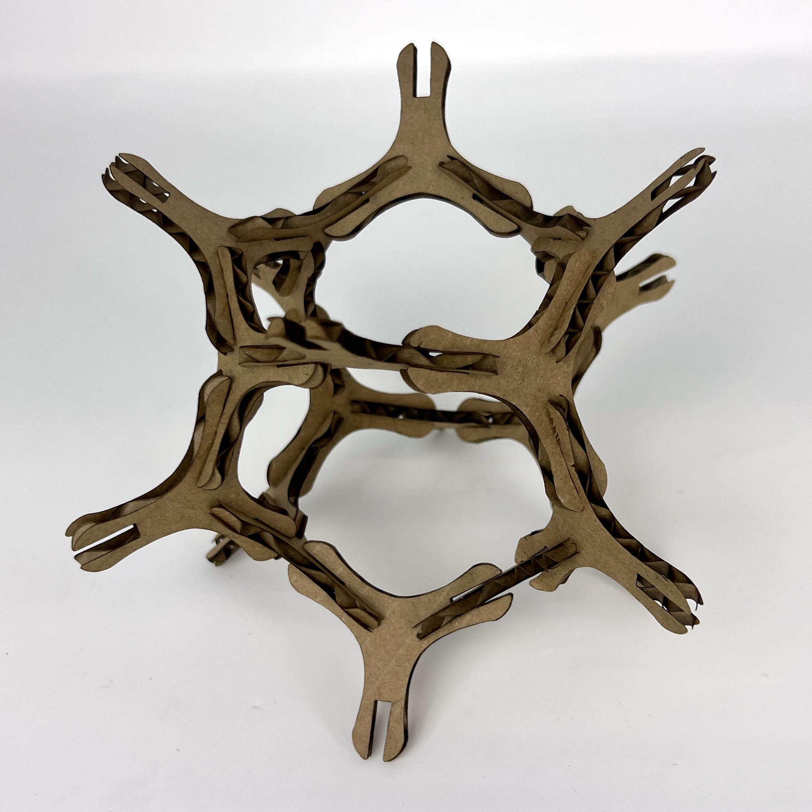
 <br>
 <br>
 
The second assignment of today was to model two household items in CAD. I decided to model my (very cool) space mouse and a water bottle. (A space mouse is a computer mouse 
that allows you to freely move in 3d space.) I decided to choose two items that require different methods to model. (e.g., The mouse utilizes the “revolve around axis” tool 
whereas the bottles utilizes the “shell”, “thread” and “loft” tool.)
<font size="5">
<br>
<br>
<b>
Modelling process:
</b>
</font>
<br>
</font>
<ul>

<li>First, I took two pictures of it with some calipers next to it so that I would be able to calibrate the image to correct size later. (Since it is symmetrical, I only need one 
picture from above and one from a side.)</li>

<br>
<li>Then I imported these pictures into Fusion 360 and put them on their corresponding axis. </li>
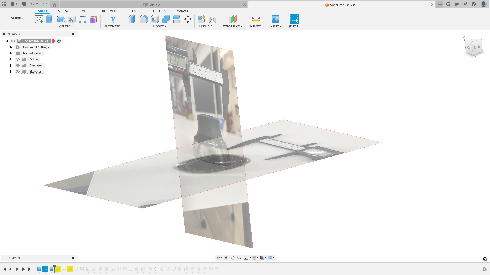
<br>
</li>After that I used the spline tool to create the outline of one half of the mouse and connected it right in the middle. </li>

<br>
</li>Next, I revolved the sketch around the center axis to get a perfectly symmetrical shape. </li>
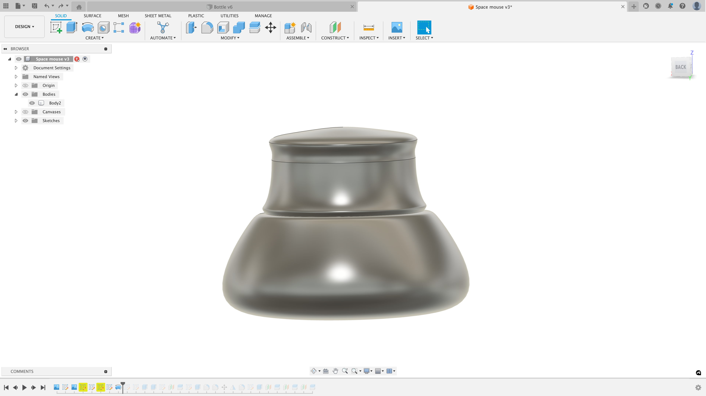
<br>
</li>Then the body was split to give every part a different material and cut of the unnecessary bottom.</li>
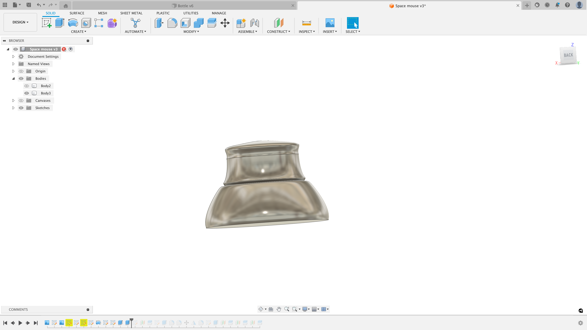
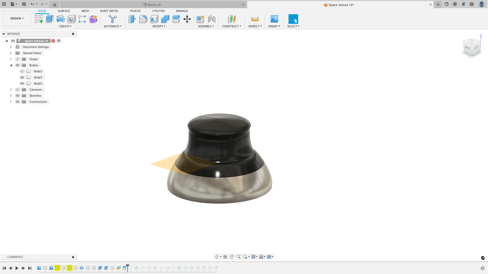
<br>
</li>Next, I modelled the knobs on the side of the mouse and mirrored them. </li>
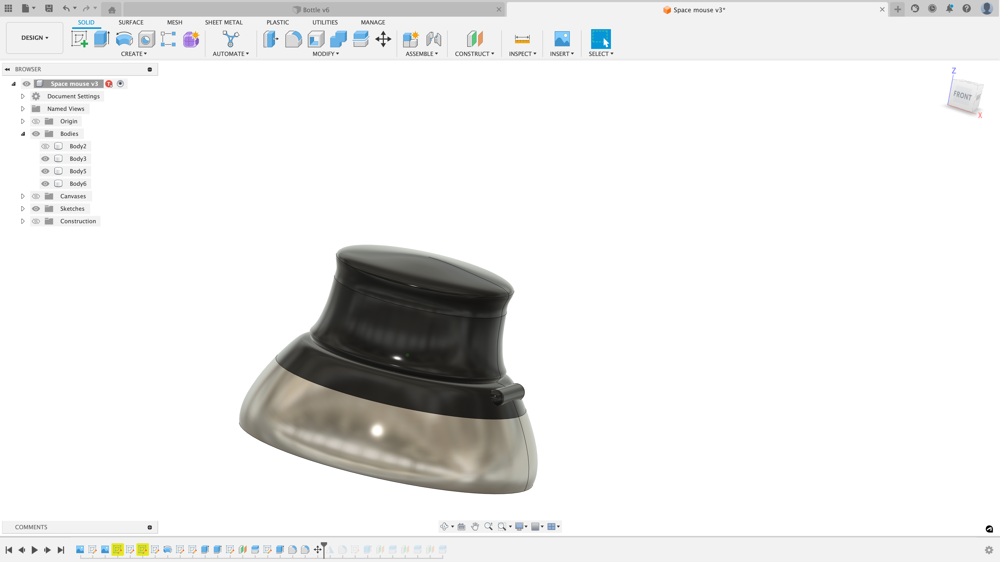
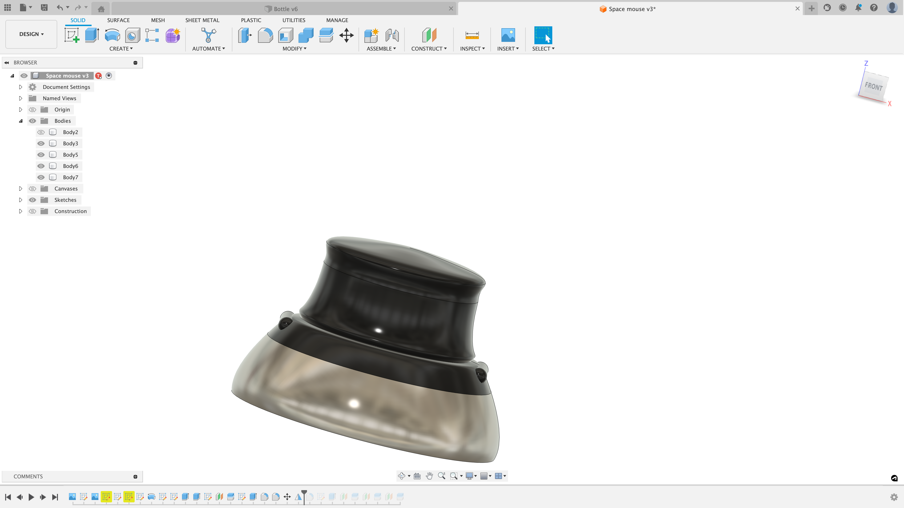
<br>
</li>After that I split the model some more and gave every single section a different material. (e.g. rubber and plastic for the top part, aluminum for the bottom etc.)</li>
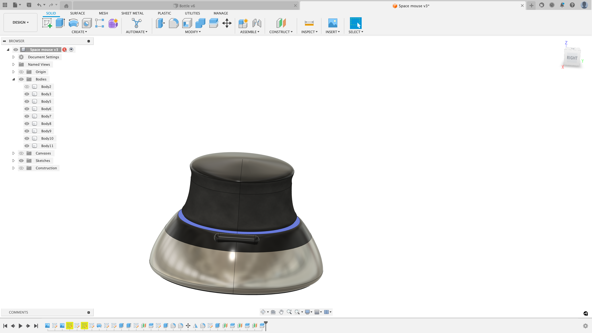
<br>
</li>Finally, I rendered the whole model in the Fusion 360 rendering menu and exported it. </li>

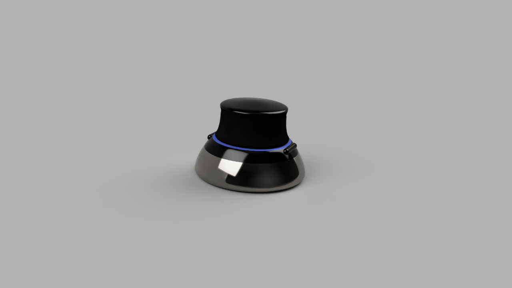
<br>
</ul>
Here is a video on the process: 
<video with="816" height="480" controls>
  <source src="Space_Mouse_Modelling.mov" type="video/mp4">
<br>
<br>
<br>

  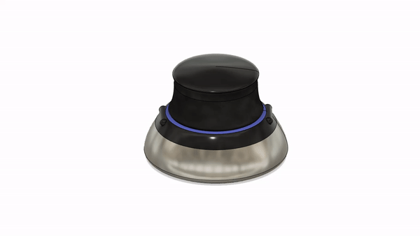

<br>
<br>
<br>
<br>
<br>
<br>
<br>
<br>
<br>
<font size="5">
<b>
And this is how I modelled the bottle:
</b>
</font>
<ul>
<li>Create cylinder</li>
<li>Make the top thinner using a rectangle as a cutting tool</li>
<li>Use a fillet for a smooth transition</li>
<li>Create the upper and lower ring (revolve around axis)</li>
<li>Use a smaller cylinder and shell tool to make the bottle cap</li>
<li>Create threads on bottle and bottle cap (thread tool)</li>
<li>Assemble all parts</li>
<li>Connect bottle and lid via a band using loft tool</li>
<li>Cut out grooves on bottle cap using small circles and a circular pattern</li>
</ul>
<br>
<br>
<br>
<br>
Here is a video on the process: 
<video with="816" height="480" controls>
  <source src="Bottle_Screenrec.mov" type="video/mp4">
<br>
<br>
<br>
... and a picture:
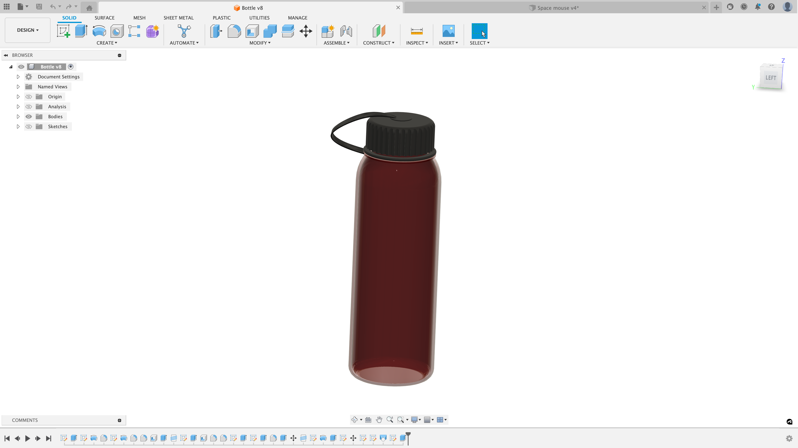


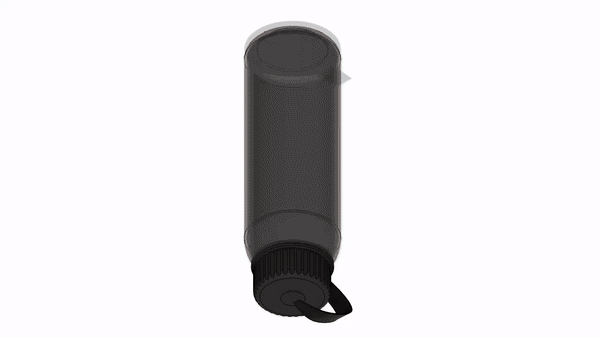

  <br>
  <br>
  <br>
  <br>
<font size="5"> 
  <b>
Cutting a Benchy from Cardboard
</font>
</b>
<br>
<br>
Another project I did was this laser cut Benchy. A Benchy is commonly used as a benchmark for 3d printers and since I like them I decided to cut one out of
cardboard using the laser cutter. 
  <br>
There are multiple ways to do this. You can stack layers of cardboard ontop of eachother, next to each other, fold them or use interlocking slices. I decided to
use interlocking slices, because this is a relatively material efficient and it looks cool! 
Instead of manually drawing all these slices, I found an application called "Slicer for Fusion 360". It is a discontiued (and buggy ;)) Software that allows you to upload 3d models 
and slice them into laser-cuttable pieces that interlock. 
<br>
Here is a picture of what the model looks like:

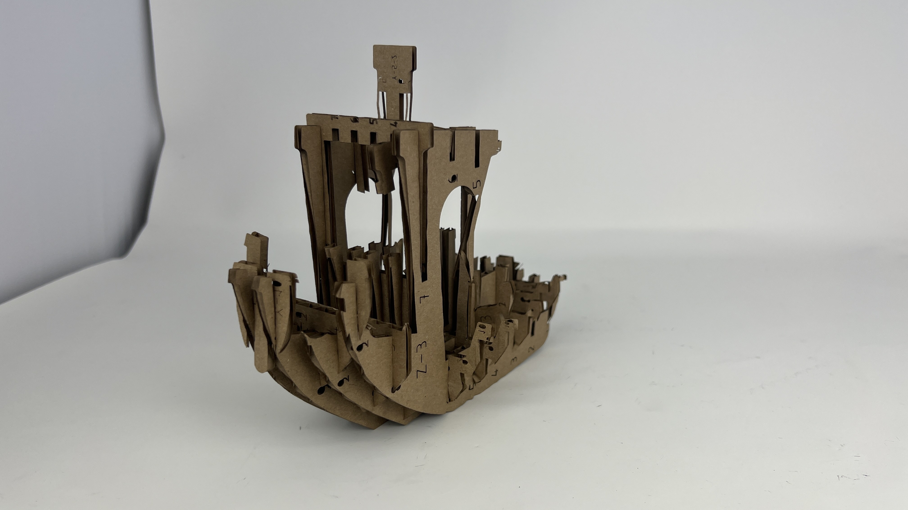

</xmp>
</body>

<script src="../strapdown.js"></script>
<script src="https://cdn.jsdelivr.net/npm/bootstrap@5.0.2/dist/js/bootstrap.bundle.min.js" ></script>

</html>